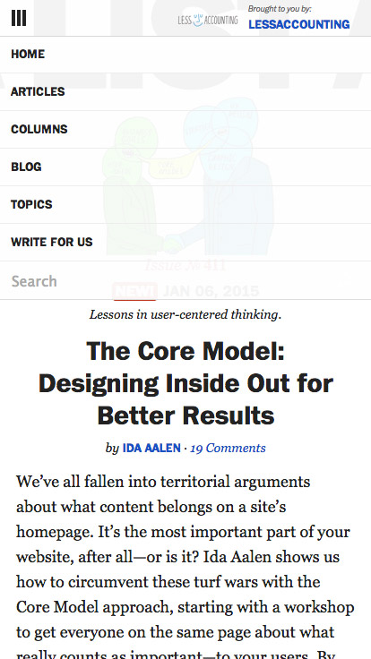

Responsive
Web Design
HTML, CSS et JS pour toutes les tailles d'écran !
Qui je suis ?
Perrine Bocquin,
développeuse front end en agence web depuis 6 ans,
en freelance depuis 1 mois !
De quoi on parle ?
Qu'est-ce que le responsive ?
Un ensemble de technologies facilitant
la consultation, la lecture et la navigation sur un site web,
quelque soit la taille de l’écran du terminal.

Des modes de consultation variés
sur écran de bureau, d’ordinateur portable, sur smartphone, tablette, en portait ou paysage, sur une télévision…

Les usages mobiles
sont de plus en plus populaires
Difficultés pour l'utilistateur
si le site web n'est pas adapté à son mode de consultation
- scroll horizontal
- obligé de zoomer sur les textes pour lire
- élements en fixed qui cachent de larges parts de la page
- menu inadapté, navigation complexe
- liens trop petits, incliquables
- etc.
Solutions
- Version mobile dédiée
- Application native
- Web App
- Site responsive !
Réussir le passage vers petits écrans
- Garder un site toujours agréable à consulter
- Assurer une lecture confortable
- Avoir des interactions adaptées aux surfaces tactiles
- Faire attention aux perfomances
Quelques exemples
(ancien site - le nouveau est toujours responsive, mais organisé différement)
Quelques exemples
(ancien site aussi - le nouveau a perdu en lisibilité)
Quelques exemples
Quels sont les outils ?
HTML, beaucoup de CSS, un peu de Javascript
Pour tester
On réduit la taille du navigateur pour voir ce que ça donne !
A la fin, il est tout de même necessaire de tester sur de vrais terminaux.
Tester sous Chrome
Developers tools > icone téléphone > plein de choix de devices

On s'y met !
Un conseil pour commencer
Penser dès le début qu’on ignore sur quelle taille d’écran le site sera consulté :
ça permet de gagner du temps !
Ajuster la taille des contenus
en fonction de l'espace disponible :
- taille des textes relative
- blocks adaptatifs
- points de rupture
- réorganisation
Taille des textes
On utilise des unités relatives pour les textes (plus de px)
comme les em, rem et pourcentages.
Le navigateur a une taille de texte de base (souvent 16px), que l'utilisateur peut choisir de changer.
Cette taille de base peut être différente en fonction du type d'appareil.
Le meilleur moyen de garder des textes homogènes est d’utiliser une taille de texte relative à la taille du navigateur.
Taille des textes
En pratique
| EM |
Cette taille se calcule relativement à la font-size courrante, c'est à dire la font-size du parent pour une propriété font-size, et la font-size de l'élement pour les autres propriétés (line-height...) Si le parent fait 14px et qu’on veut que l’enfant en fasse 28 : 28 / 14 = 2em
|
| % |
Fonctionne comme les em, relativement à la taille du parent. Si le parent fait 14px et qu’on veut que l’enfant en fasse 28 : ( 28 / 14 ) x 100 = 200%
|
| REM |
Fonctionne comme les em, mais par rapport à la taille du body uniquement. On part du principe que le body fait 16px. Quelque soit la taille du parent de mon élement, si qu’on veut que l’enfant en fasse 28, on calcule directement par rapport au body : 28 / 16 = 1.75remAttention : compatible IE9+ seulement |
Taille des textes
Tester
Pour voir le résultat facilement en fonction des différentes tailles de texte :
| FF |
Affichage > zoom > cocher “Zoom texte seulement” puis zoomer et dézoomer pour voir le résultat (“Cmd” + “+”, “Cmd” + “-” et “Cmd” + “0”) |
| Chrome | Paramètres > Paramètres avancés > Contenus web > Changer la taille de police |
Taille des textes
Exercice n°1
TODO
Passer les textes du document des px en rem.
Partir du principe que le body fait 16px.
Garder les px pour la compatibilité ie8.
p {
font-size: 12px;
font-size: .75rem;
}Taille des textes
Exercice n°2
TODO
Passer les textes du document des em.
Attention à l'héritage !
N'hésitez pas à déplacer les propriétés trop englobantes aux élements auxquels elles s'appliquent vraiment.
p {
font-size: .75em;
}Contenus fluide
La taille des élements ne doit pas être figée en pixels
mais fluide en pourcentage.
Contenus fluide
Plusieurs types de layouts
| Fixe |
Rigide, en pixels. On n'en veut pas. |
| Fluide |
Ou liquide. La taille est en pourcentage du parent, s'adapte à l'espace disponible. |
| Elastique |
Les tailles des élements sont en em/rem, donc relatifs à la taille du texte. Si j’ai une font-size de base de 48px, alors mon site, bien que sur desktop, apparait en version mobile. Exemple : ClearLeft |
| Mixe | Un mélange de tout cela |
Contenus fluide
Propriétés clés
(pas exclusives, mais importantes)
position |
relative, absolute, etc. | Sert de référence pour les tailles en % : un élement prend sa taille en fonction de son parent postionné le plus proche |
max-width |
en px ou % |
Pour les containers. Plutôt que width. |
width |
en % |
Pour les contenus. Pour calculer : (Element (px) / Contexte (px) ) x 100 = Resultat (%) |
Contenus fluide
Propriétés clés
Pour des images qui s'adaptent au contexte :
img {
max-width: 100%;
height: auto;
}
L'image prend toute la taille disponible en largeur,
et sa hauteur est calculée automatiquement par le navigateur.
Contenus fluide
Propriétés clés
Pour des images de background :
div {
background-image: url(images/chaton.jpg);
background-position: 50%; /* pour center */
background-size: cover;
}
L'image de fond prend toutes la place disponible.
A moins d'avoir le même ratio (hauteur / largeur) que l'element, elle est cropée.
Contenus fluide
Propriétés clés
Pour des images de background :
(suite)
ATTENTION : background-size n'est pas supportée par IE8.
Une librairie jquery pour remplacer : BackStretch
Contenus fluide
Propriétés clés
Pour se faciliter la vie avec les tailles des éléments :
*, *:before, *:after {
box-sizing: border-box;
}
La taille définie pour elements avec cette propriété inclu le padding et les border
(avec la valeur par défaut, content-box, ne prend en compte que le contenu)
Contenus fluide
Plus d'infos sur le box-model
et box-sizing

Contenus fluide
Exercice avec des chatons
METTRE EN LIGNE
Fluidifier les contenus de la page :
- passer les textes en taille relative (comme vu précédemment)
- donner une largeur maximale au container au lieu d’une largeur fixe
- passer les contenus en %age au lieu des pixels
(ne pas oublier de positionner les elements en relatif !) :
titre, menu, diapositives, titre du footer, liens du footer. - mettre l'image de banière en cover
Contenus fluide
Exercice (suite)
Fluidifier les contenus de la page :
Pour ceux qui finissent en avance
ajouter la librairie javascript Masonry pour ne pas avoir de “trous” dans la grille de contenus
Media queries
Lorsque la page fluide ne suffit pas,
on crée des points de rupture pour lesquels les styles changent.
Media queries
Content is king !
Les breakpoints doivent être appliqués là où ils sont necessaire, et non déterminés à l'avance.
Appliquez les CSS de base, agrandissez/réduisez la taille de la fenêtre, et lorsque c’est necessaire :
ajoutez un breakpoint !
Par exemple quand le contenu :
- ne ressemble plus à rien
- devient illisible (45-90 caractères par ligne pour une bonne lisibilité)
Media queries
Ecrire une media query
@media [ONLY | NOT] *type_de_media* [AND (*critère* : *valeur*)]
Exemple : @media screen and (width : 680px)
si mon média est un écran et que la fenêtre fait 680px de large
Media queries
Medias
NOTONLY
|
facultatif |
Si on cette media query sert à exclure ou limiter certains types de medias. Rarement utilisé en responsive. |
allscreenprintetc. |
facultatif vaut all quand il n'est pas précisé
|
Pour cibler un type de media en particulier. |
Exemple : @media ONLY screen
si mon média est un écran et rien d'autre
Media queries
Critères
widthmin-widthmax-widthheightetc. |
taille en px, em, rem |
Pour cibler en fonction de la taille de la fenêtre. Ex : (min-width : 450px)
|
orientation |
portraitlandscape
|
Pour cibler par l'orientation (portait ou paysage) de la fenêtre. Ex : (orientation : portrait)
|
resolutionmin-resolutionmax-resolution
|
Nombre, en dpi
|
La résolution de l’écran, pour cibler les écran rétina et leur servir des images plus grandes. Ex : (min-resolution : 120dpi)(-webkit-device-pixel-ratio : 1.5)
|
-webkit-device-pixel-ratio
|
Chiffre |
Mais aussi d'autres moins souvent utilisés, comme : device-aspect-ratio, device-width, device-height…
Media queries
Séparateurs
AND
|
Pour additionner un media et un ou plusieurs critères exclusifs |
,
|
Pour concaténer des règles incompatibles |
Exemple : @media screen and (min-width : 450px),
screen and (orientation : portait) and (max-width : 1024px)
si mon média est un écran et que la fenêtre fait au minimum 450px de large,
ou si mon media est un écran en orientation portait dont la fenêtre fait au maximum 1024px de large
Media queries
Où ajouter la media query
2 possibilités
1. Dans la feuille de style
@media screen and (width : 680px) {
height: 200px;
}
2. Dans l'appel de feuille de style
Media queries
ATTENTION
Les media queries ne sont pas supportées par IE8.
Media queries
Exercice arc-en-ciel
METTRE EN LIGNE
Créer des breakpoints pour chacun de ces critères :
- moins de 580px : couleur de fond du body = #FF7A7B
- plus de 580px et moins de 700px : couleur de fond du body = #FFD053
- plus de 700px et moins de 820px : couleur de fond du body = #FFFF60
- plus de 820px et moins de 940px : couleur de fond du body = #C9FB4A
- plus de 940px et moins de 1060px : couleur de fond du body = #A2FFFF
- plus de 1060px et moins de 1180px : couleur de fond du body = #89D9FF
- plus de 1180px : couleur de fond du body = #DD89DE
- moins de 640px en portrait : couleur du texte = #FFD053
- moins de 640px en portrait : couleur du texte = #FFD053
- plus de 640px et moins de 960px, et plus de 1200px : couleur du texte = #AFE130
- plus de 960px et moins de 1200px : couleur du texte = #9d499e
Media queries
Exercice arc-en-ciel (suite)
Pour ceux qui finissent en avance
ajouter un peu de responsive (taille de la boite, taille des images de background à adapter)
Media queries
Exercice avec des chatons
On reprend l'exercice de la partie précédente
Ajouter des breakpoints lorsque c'est necessaire :
- 1er breakpoint : passer d’une grille de 4 chatons à une grille de 2
-
2ème breakpoint :
- réduire la hauteur de la banière, qui prend trop de place sur petit écran
- mettre les elements du footer les uns en dessous des autres
- mettre les elements du menu les uns en dessous des autres, et leur donner une apparence plus “mobile” : ils prennent toute la largeur, prennent comme bg par défaut #301B09, comme bg au survol #683b14 et comme couleur de texte #fefff6
- 3ème breakpoint : mettre 1 element par ligne (plus besoin du float !)
Densité de pixels
Certain écrans sont dits “rétina”.
Pour une même surface, on a plus de pixels sur un écran rétina que sur un écran classique, ce qui donne aux aux images et textes un aspect très net.

Densité de pixels
Affichage sur écran rétina
Les pixels sont plus petits, donc l’écran n’affiche pas les contenus à la taille réèle des pixels, car tous les contenus serait trop petit et illisible.
Pour les textes : c'est géré directement par le navigateur
Pour les visuels : il faut fournir des contenus adaptés.
Densité de pixels
Images rétina
L'image doit être 2 fois plus grande
que la taille à laquelle elle va être affichée.
Conventionnellement, on suffixe son nom avec @2x
Densité de pixels
Image inline rétina
Pour une image rétina logo@2x.png qui fait 160px x 400px
<img src="logo@2x.png" alt="Logo" height="80" width="200">
Attention : il existe de stechniques pour servir l'image inline à la bonne taille,
nous les verons plus tard.
Densité de pixels
Image de background rétina
.facebook {
background: url("fb.png") 50% 50% no-repeat; // fb.png fait 20px x 10px
}
@media screen and (min-device-pixel-ratio: 1.5), screen and (min-resolution: 144dpi) {
.facebook {
background-image: url("fb@2x.png"; // fb@2x.png fait 40px x 20px;
background-size: 20px 10px;
}
}Densité de pixels
Exercice : a list appart
METTRE EN LIGNE
Remplacer les images par des images rétina
lorsque c'est nécessaire :
- pour les images inline
- pour les images de background
Spécificités
des petits écrans
Optimisation de l’espace disponible
petit écran = moins de place
Il faut optimiser l'espace pour que l'information reste accesssible.
Optimisation de l’espace disponible
Comment optimiser ?
On cache ce qui n'est pas immédiatement utile (mais donner un moyen d'y accéder quand même)
menus, commentaires, détails sur un élément, etc.
Optimisation de l’espace disponible
Exemple
Rubriques fermées par défaut
Plus de sommaire en haut de l'article
Plus de colonne de droite
Menu glissant caché par défaut
Optimisation de l’espace disponible
Exemple

Menu en colonne caché par défaut
Commentaires chargés à la demande
Optimisation de l’espace disponible
Exercice avec des chatons
On reprend (encore) l'exercice
Optimiser le menu pour petit écran :
- le menu placé tout en haut de la page, en fixed
-
il s'ouvre et se ferme au click :
-
Ajouter en JS au début de
.main-navun lien
à cliquer (utiliser.prepend())
Menu -
Sur ce lien, ajouter un event listener pour le click
(utiliser.on('click', function(event) { ... }) -
au click sur le lien, ajouter ou retier une class
.menu-openedsur.main-nav
-
Ajouter en JS au début de
- styler le lien qui ouvre et ferme le menu :
- quand le menu est fermé, afficher en bg l'icone
- quand le menu est ouvert, l'icone
Optimisation de l’espace disponible
Pour aller plus loin
Tutoriels pour :
Interactions au touch
On interagit avec les écrans tactiles avec les doigts, et pas un clavier et une souris.
Ce sont les "touch gestures"
Interactions au touch
Touch gestures
- Tap, double tap : équivalent du click, double click.
- Pan : déplacement du doigt du doigt sur l'écran (équivalent du drag and drop)
- Swipe : balayer l’écran avec le doigt, de haut en bas, droite à gauche...
- Pinch : avec 2 doigts : pincer, écarter les doigts, pour zoomer et dézoomer par exemple.
- etc.
Interactions au touch
Librairie JS
Interactions au touch
Hammer.js
avec le plugin jQuery
$(element).hammer(options).bind("nom_de_l_evenement", function() { ... });
La liste des evènements disponibles avec Hammer se trouve dans la documentation > Recognizers.
Ex : Evènements pour "pan"
Interactions au touch
Exercice : diaporama
METTRE EN LIGNE
Ajouter la possibilité de "swiper" pour naviguer sur le diaporama,
en utilisant la librairie Hammer.js
js/diaporama.js, ajouter des écouteurs d'évenements pour le swipe (vers la gauche et la droite)evènements swipe dans Hammer.js
Interactions au touch
Exercice : diaporama (suite)
Ajouter des evènements touch :
Pour ceux qui finissent en avance
- mettre l'image dans un element HTML5 figure
- ajouter une "figcaption" pour chacune des images
- cacher cette figcaption par défaut
- l'afficher lorsqu'on "tap" sur l'image
Performances
Faire attention au poids des données à télécharger sur mobile : le réseau est souvent moins rapide, il faut garder un site agréable à consulter.
Approche Mobile First
CSS pour la version mobile d’abord
On part du plus simple pour aller vers le plus compliqué.
Approche Mobile First
Pourquoi ?
Pour que le navigateur le moins puissant (smartphone) ait moins de commandes à charger et interpréer.
Approche Mobile First
Exercice avec des chatons
On reprend l'exercice, on passe les instructions en mobile-first.
Les instructions pour petite écran qui overwritaient celles pour plus grand écran deviennet les instructions par défaut.
Les instructions pour grand écran sont dans des media queries.
Ex :
.diapo est en float:left fait 25% par défaut, 50% entre 450px et 650px, et 100% pour les écrans <450px.
.diapo n'aura pas de float par défaut et fera 100% de large, sera en float:left pour les écrans >450px, 50% de large entre 450px et 650px, et 25% pour les écran >650px.
Pour aller plus loin
Un peu de lecture :

Responsive Web Design,
par Ethan Marcotte
Editions Eyrolles
Pour aller plus loin
Une newsletter (en anglais) :
Gratuite, envoyée une fois par semaine.
Parle de conception, informe sur les outils, donne des conseils, des tutoriels et des liens d'inspiration.
Oh et pour finir
La correction des exercices ;-)
Taille des textes
TODO
Exercice n°1Exercice n°2
Contenu fluides
METTRE EN LIGNE
Exercice des chatons